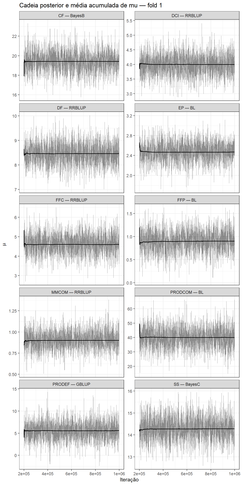
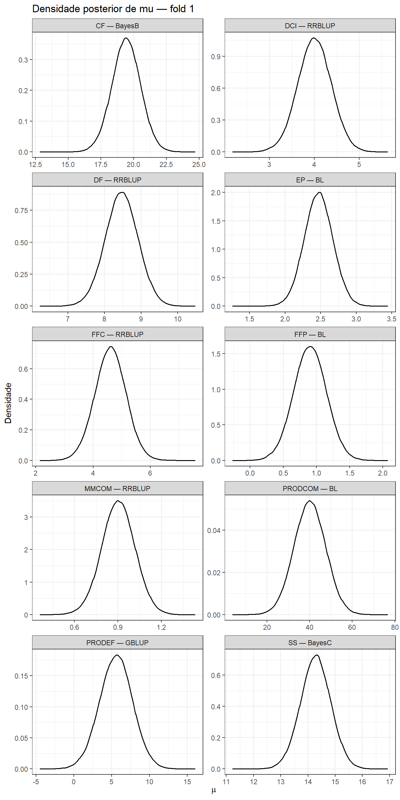
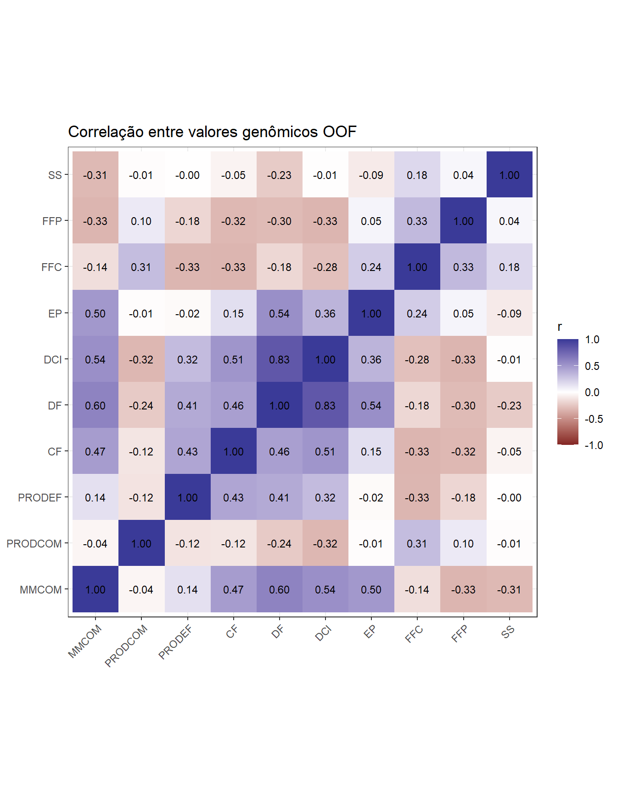

Last updated: 2026-08-10
Checks: 7 0
Knit directory:
Bayesian-ridge-regression-papaya/
This reproducible R Markdown analysis was created with workflowr (version 1.7.2). The Checks tab describes the reproducibility checks that were applied when the results were created. The Past versions tab lists the development history.
Great! Since the R Markdown file has been committed to the Git repository, you know the exact version of the code that produced these results.
Great job! The global environment was empty. Objects defined in the global environment can affect the analysis in your R Markdown file in unknown ways. For reproduciblity it’s best to always run the code in an empty environment.
The command set.seed(20260717) was run prior to running
the code in the R Markdown file. Setting a seed ensures that any results
that rely on randomness, e.g. subsampling or permutations, are
reproducible.
Great job! Recording the operating system, R version, and package versions is critical for reproducibility.
Nice! There were no cached chunks for this analysis, so you can be confident that you successfully produced the results during this run.
Great job! Using relative paths to the files within your workflowr project makes it easier to run your code on other machines.
Great! You are using Git for version control. Tracking code development and connecting the code version to the results is critical for reproducibility.
The results in this page were generated with repository version c719ad2. See the Past versions tab to see a history of the changes made to the R Markdown and HTML files.
Note that you need to be careful to ensure that all relevant files for
the analysis have been committed to Git prior to generating the results
(you can use wflow_publish or
wflow_git_commit). workflowr only checks the R Markdown
file, but you know if there are other scripts or data files that it
depends on. Below is the status of the Git repository when the results
were generated:
Ignored files:
Ignored: .Rproj.user/
Ignored: .github/
Ignored: code/
Ignored: data/Bayesiana goiaba Eileen SReport.pdf
Ignored: output/matrices/
Ignored: output/models/full/bglr_runs/
Ignored: output/models/full/runs/
Ignored: output/models/full/temporary/
Ignored: output/preprocessing/
Ignored: output/results/
Ignored: renv/library/
Ignored: renv/staging/
Note that any generated files, e.g. HTML, png, CSS, etc., are not included in this status report because it is ok for generated content to have uncommitted changes.
These are the previous versions of the repository in which changes were
made to the R Markdown (analysis/04_results_pt.Rmd) and
HTML (docs/04_results_pt.html) files. If you’ve configured
a remote Git repository (see ?wflow_git_remote), click on
the hyperlinks in the table below to view the files as they were in that
past version.
| File | Version | Author | Date | Message |
|---|---|---|---|---|
| Rmd | c719ad2 | WevertonGomesCosta | 2026-08-10 | fix: integrate predictive fit and convergence in model selection |
| Rmd | e829b5b | WevertonGomesCosta | 2026-08-10 | feat: add article-aligned model comparison and genomic ranking |
| Rmd | c54495b | WevertonGomesCosta | 2026-07-23 | refactor: simplify workflowr tutorial structure |
1. Objetivo e contrato desta etapa
Este módulo usa exclusivamente os resultados oficiais já produzidos no Módulo 03. Nenhum modelo é reajustado.
A análise segue a estrutura de Silva et al. (Silva et al. 2021) e a adapta ao conjunto de métodos efetivamente utilizado neste projeto. O artigo comparou seis modelos Bayesianos; aqui são comparados conjuntamente os sete métodos ajustados:
- RR-BLUP, implementado pelo componente
BRRdo BGLR; - BayesA;
- BayesB;
- BayesB2;
- BayesC;
- Lasso Bayesiano;
- GBLUP.
A comparação inclui DIC, delta de DIC, probabilidade aproximada do
modelo (Wprob), razão de evidência (ER) e
desempenho preditivo fora da amostra.
O desenho de validação não é alterado para imitar o tamanho dos folds do artigo. Permanecem os cinco folds determinísticos e estratificados por família já validados neste projeto, com 120 indivíduos de treinamento e 30 de validação em cada fold.
Como o artigo não fornece uma regra escalar única que combine DIC e
capacidade preditiva, a decisão deste projeto integra explicitamente
três fontes de evidência: desempenho OOF, ajuste relativo por DIC e
estabilidade das cadeias. O maior r OOF continua sendo a
referência preditiva, mas diferenças preditivas pequenas não são usadas
para sobrepor, de forma automática, um modelo com pior DIC ou com sinais
claros de instabilidade. A decisão final por característica é registrada
em uma tabela explícita e auditável, sem reajuste seletivo dos
modelos.
Os valores genômicos usados no ordenamento seguem a lógica da validação cruzada: cada indivíduo recebe o valor genômico do fold em que seu fenótipo foi mascarado. Não é calculada média dos cinco ajustes e não é realizado ajuste adicional com todos os fenótipos.
A seleção multicaracterística não é realizada nesta etapa.
2. Entradas oficiais
suppressPackageStartupMessages({
library(dplyr)
library(tidyr)
library(ggplot2)
library(knitr)
library(here)
})MATRICES_FILE <- here(
"output",
"matrices",
"matrices_object.rds"
)
MODELS_DIR <- here(
"output",
"models",
"full"
)
MODELS_FILE <- file.path(
MODELS_DIR,
"models_object.rds"
)
RESULTS_DIR <- here(
"output",
"results",
"module04"
)
FIGURE_DIR <- file.path(
RESULTS_DIR,
"figures"
)
dir.create(
RESULTS_DIR,
recursive = TRUE,
showWarnings = FALSE
)
dir.create(
FIGURE_DIR,
recursive = TRUE,
showWarnings = FALSE
)
matrices_object <- readRDS(
MATRICES_FILE
)
models_object <- readRDS(
MODELS_FILE
)
metrics <- models_object$metrics_by_fold
predictions <- models_object$predictions
genomic_by_fold <- models_object$genomic_values_by_fold
convergence <- models_object$convergence_diagnostics
run_design <- models_object$run_design
traits <- colnames(
matrices_object$phenotypes
)
methods <- c(
"RRBLUP",
"BayesA",
"BayesB",
"BayesB2",
"BayesC",
"BL",
"GBLUP"
)
method_labels <- c(
RRBLUP = "RR-BLUP/BRR",
BayesA = "BayesA",
BayesB = "BayesB",
BayesB2 = "BayesB2",
BayesC = "BayesC",
BL = "Bayesian Lasso",
GBLUP = "GBLUP"
)
EXPECTED_SIGNATURE <- "cfa762f05ddd067e"3. Auditoria das entradas
input_audit <- data.frame(
Check = c(
"Assinatura analítica oficial",
"10 características",
"7 métodos",
"5 folds",
"350 ajustes",
"10.500 predições OOF",
"52.500 valores genômicos específicos por fold",
"700 linhas de diagnóstico de convergência",
"150 predições OOF por característica e método",
"Todos os componentes genômicos OOF são finitos"
),
Passed = c(
identical(
models_object$signature,
EXPECTED_SIGNATURE
),
length(traits) == 10L,
setequal(
unique(run_design$Method),
methods
),
setequal(
unique(run_design$Fold),
1:5
),
nrow(metrics) == 350L,
nrow(predictions) == 10500L,
nrow(genomic_by_fold) == 52500L,
nrow(convergence) == 700L,
all(
table(
predictions$Trait,
predictions$Method
) == 150L
),
all(
is.finite(
predictions$Genomic_component
)
)
)
)
kable(
input_audit,
caption = "Auditoria das entradas oficiais do Módulo 04"
)| Check | Passed |
|---|---|
| Assinatura analítica oficial | TRUE |
| 10 características | TRUE |
| 7 métodos | TRUE |
| 5 folds | TRUE |
| 350 ajustes | TRUE |
| 10.500 predições OOF | TRUE |
| 52.500 valores genômicos específicos por fold | TRUE |
| 700 linhas de diagnóstico de convergência | TRUE |
| 150 predições OOF por característica e método | TRUE |
| Todos os componentes genômicos OOF são finitos | TRUE |
4. Desempenho preditivo OOF
As métricas principais são calculadas com as 150 predições fora da amostra de cada combinação entre característica e método. Esta consolidação preserva uma única predição OOF por indivíduo.
pooled_metrics <- predictions |>
group_by(
Trait,
Method
) |>
summarise(
N = n(),
r = cor(
Observed,
Predicted
),
RMSE = sqrt(
mean(
(
Observed -
Predicted
)^2
)
),
MAE = mean(
abs(
Observed -
Predicted
)
),
Bias = mean(
Predicted -
Observed
),
Slope =
cov(
Observed,
Predicted
) /
var(
Predicted
),
.groups = "drop"
)
pooled_metrics <- pooled_metrics |>
mutate(
t_value =
r *
sqrt(
(N - 2) /
(1 - r^2)
),
p_value =
2 *
pt(
abs(t_value),
df = N - 2,
lower.tail = FALSE
)
) |>
select(
-t_value
)fold_summary <- metrics |>
group_by(
Trait,
Method
) |>
summarise(
Mean_DIC = mean(
DIC
),
SD_DIC = sd(
DIC
),
Mean_fold_r = mean(
Correlation
),
SD_fold_r = sd(
Correlation
),
Mean_fold_RMSE = mean(
RMSE
),
SD_fold_RMSE = sd(
RMSE
),
Mean_fold_MAE = mean(
MAE
),
SD_fold_MAE = sd(
MAE
),
.groups = "drop"
)5. DIC, delta, Wprob e razão de evidência
Silva et al. (Silva et al. 2021) calcularam a probabilidade aproximada de cada modelo a partir da diferença entre seu DIC e o menor DIC. Neste projeto, a normalização é estendida dos seis modelos do artigo para os sete métodos efetivamente ajustados.
\[ \Delta_j = DIC_j - \min(DIC) \]
\[ Wprob_j = \frac{\exp(-\Delta_j/2)} {\sum_k \exp(-\Delta_k/2)} \]
\[ ER_j = \frac{Wprob_{\max}} {Wprob_j} \]
model_comparison <- pooled_metrics |>
left_join(
fold_summary,
by = c(
"Trait",
"Method"
)
) |>
mutate(
Method_label =
unname(
method_labels[
Method
]
)
) |>
group_by(
Trait
) |>
mutate(
Delta_DIC =
Mean_DIC -
min(
Mean_DIC
),
log_weight =
-0.5 *
Delta_DIC,
stable_weight =
exp(
log_weight -
max(
log_weight
)
),
Wprob =
stable_weight /
sum(
stable_weight
),
ER =
max(
Wprob
) /
Wprob
) |>
ungroup() |>
select(
Trait,
Method,
Method_label,
Mean_DIC,
SD_DIC,
Delta_DIC,
Wprob,
ER,
N,
r,
p_value,
RMSE,
MAE,
Bias,
Slope,
Mean_fold_r,
SD_fold_r,
Mean_fold_RMSE,
SD_fold_RMSE,
Mean_fold_MAE,
SD_fold_MAE
) |>
arrange(
match(
Trait,
traits
),
Delta_DIC
)
kable(
model_comparison,
digits = 5,
caption = "Comparação conjunta dos sete métodos por característica"
)| Trait | Method | Method_label | Mean_DIC | SD_DIC | Delta_DIC | Wprob | ER | N | r | p_value | RMSE | MAE | Bias | Slope | Mean_fold_r | SD_fold_r | Mean_fold_RMSE | SD_fold_RMSE | Mean_fold_MAE | SD_fold_MAE |
|---|---|---|---|---|---|---|---|---|---|---|---|---|---|---|---|---|---|---|---|---|
| MMCOM | RRBLUP | RR-BLUP/BRR | -11.36551 | 8.72501 | 0.00000 | 0.24484 | 1.00000 | 150 | 0.53470 | 0.00000 | 0.22878 | 0.18633 | -0.00171 | 0.75408 | 0.54392 | 0.11405 | 0.22725 | 0.02948 | 0.18633 | 0.02369 |
| MMCOM | BayesC | BayesC | -10.65753 | 8.59329 | 0.70798 | 0.17185 | 1.42474 | 150 | 0.53864 | 0.00000 | 0.22754 | 0.18649 | -0.00159 | 0.76746 | 0.54807 | 0.11416 | 0.22612 | 0.02843 | 0.18649 | 0.02248 |
| MMCOM | BayesB2 | BayesB2 | -10.35011 | 8.59189 | 1.01540 | 0.14737 | 1.66146 | 150 | 0.53815 | 0.00000 | 0.22770 | 0.18676 | -0.00141 | 0.76563 | 0.54709 | 0.11314 | 0.22627 | 0.02849 | 0.18676 | 0.02226 |
| MMCOM | BayesA | BayesA | -10.32468 | 8.55792 | 1.04083 | 0.14550 | 1.68273 | 150 | 0.53811 | 0.00000 | 0.22769 | 0.18677 | -0.00156 | 0.76611 | 0.54700 | 0.11344 | 0.22626 | 0.02847 | 0.18677 | 0.02221 |
| MMCOM | GBLUP | GBLUP | -10.24033 | 7.87379 | 1.12518 | 0.13949 | 1.75521 | 150 | 0.54479 | 0.00000 | 0.22529 | 0.18665 | -0.00059 | 0.79883 | 0.55136 | 0.11124 | 0.22408 | 0.02604 | 0.18665 | 0.02002 |
| MMCOM | BayesB | BayesB | -9.64150 | 8.33915 | 1.72401 | 0.10340 | 2.36790 | 150 | 0.54012 | 0.00000 | 0.22707 | 0.18702 | -0.00167 | 0.77288 | 0.54912 | 0.11287 | 0.22574 | 0.02748 | 0.18702 | 0.02139 |
| MMCOM | BL | Bayesian Lasso | -8.08749 | 7.33326 | 3.27802 | 0.04754 | 5.15007 | 150 | 0.54485 | 0.00000 | 0.22499 | 0.18781 | -0.00023 | 0.80695 | 0.54992 | 0.10989 | 0.22395 | 0.02425 | 0.18781 | 0.01826 |
| PRODCOM | BL | Bayesian Lasso | 1057.14272 | 4.96490 | 0.00000 | 0.24501 | 1.00000 | 150 | 0.50373 | 0.00000 | 18.71841 | 14.52165 | 0.26492 | 0.80225 | 0.49133 | 0.14586 | 18.67588 | 1.40998 | 14.52165 | 1.51847 |
| PRODCOM | GBLUP | GBLUP | 1057.43851 | 4.53505 | 0.29579 | 0.21133 | 1.15939 | 150 | 0.49753 | 0.00000 | 18.82235 | 14.57383 | 0.19891 | 0.78876 | 0.48530 | 0.13887 | 18.78417 | 1.33957 | 14.57383 | 1.56681 |
| PRODCOM | BayesA | BayesA | 1058.37656 | 4.62294 | 1.23384 | 0.13221 | 1.85321 | 150 | 0.49283 | 0.00000 | 18.90267 | 14.58714 | 0.18672 | 0.77832 | 0.48006 | 0.13755 | 18.86905 | 1.25973 | 14.58714 | 1.61417 |
| PRODCOM | BayesB2 | BayesB2 | 1058.45391 | 4.62412 | 1.31118 | 0.12719 | 1.92628 | 150 | 0.49300 | 0.00000 | 18.90039 | 14.58838 | 0.18331 | 0.77847 | 0.48032 | 0.13770 | 18.86636 | 1.26748 | 14.58838 | 1.61385 |
| PRODCOM | BayesB | BayesB | 1058.48732 | 4.53126 | 1.34460 | 0.12509 | 1.95874 | 150 | 0.49282 | 0.00000 | 18.90128 | 14.57106 | 0.17389 | 0.77884 | 0.48043 | 0.13894 | 18.86849 | 1.24412 | 14.57106 | 1.61195 |
| PRODCOM | BayesC | BayesC | 1059.11805 | 4.12875 | 1.97533 | 0.09125 | 2.68496 | 150 | 0.48364 | 0.00000 | 19.07275 | 14.67416 | 0.10538 | 0.75428 | 0.47127 | 0.13284 | 19.04336 | 1.18332 | 14.67416 | 1.64863 |
| PRODCOM | RRBLUP | RR-BLUP/BRR | 1059.70872 | 4.18336 | 2.56600 | 0.06792 | 3.60744 | 150 | 0.47735 | 0.00000 | 19.19634 | 14.80471 | 0.08815 | 0.73681 | 0.46474 | 0.12734 | 19.16784 | 1.16910 | 14.80471 | 1.70581 |
| PRODEF | GBLUP | GBLUP | 735.96294 | 17.69426 | 0.00000 | 0.19845 | 1.00000 | 150 | 0.11807 | 0.15015 | 5.33260 | 4.06613 | 0.10288 | 0.22993 | 0.17885 | 0.12561 | 5.21153 | 1.26319 | 4.06613 | 0.81068 |
| PRODEF | BL | Bayesian Lasso | 736.43421 | 18.33148 | 0.47127 | 0.15679 | 1.26571 | 150 | 0.13892 | 0.09001 | 5.27666 | 3.99762 | 0.05653 | 0.27205 | 0.20342 | 0.13810 | 5.14845 | 1.29260 | 3.99762 | 0.82048 |
| PRODEF | BayesB | BayesB | 736.63872 | 17.58000 | 0.67578 | 0.14155 | 1.40199 | 150 | 0.10990 | 0.18064 | 5.37695 | 4.09670 | 0.13745 | 0.20888 | 0.17505 | 0.12273 | 5.26191 | 1.23689 | 4.09670 | 0.80078 |
| PRODEF | BayesC | BayesC | 736.75875 | 16.77644 | 0.79581 | 0.13330 | 1.48870 | 150 | 0.10751 | 0.19037 | 5.39483 | 4.11474 | 0.14870 | 0.20201 | 0.17093 | 0.11541 | 5.28504 | 1.21062 | 4.11474 | 0.79265 |
| PRODEF | BayesA | BayesA | 736.78665 | 17.66096 | 0.82371 | 0.13146 | 1.50961 | 150 | 0.10695 | 0.19270 | 5.38260 | 4.10491 | 0.13301 | 0.20355 | 0.17074 | 0.11811 | 5.26928 | 1.22832 | 4.10491 | 0.79350 |
| PRODEF | BayesB2 | BayesB2 | 736.78874 | 17.69463 | 0.82580 | 0.13132 | 1.51119 | 150 | 0.10746 | 0.19056 | 5.38001 | 4.10229 | 0.13264 | 0.20480 | 0.17102 | 0.11747 | 5.26682 | 1.22735 | 4.10229 | 0.79121 |
| PRODEF | RRBLUP | RR-BLUP/BRR | 737.19594 | 16.53955 | 1.23300 | 0.10713 | 1.85244 | 150 | 0.10336 | 0.20814 | 5.41405 | 4.14208 | 0.15128 | 0.19258 | 0.16526 | 0.10838 | 5.30805 | 1.19190 | 4.14208 | 0.77355 |
| CF | BayesB | BayesB | 564.23021 | 8.23945 | 0.00000 | 0.22225 | 1.00000 | 150 | 0.41692 | 0.00000 | 2.46583 | 1.98226 | 0.03647 | 0.68940 | 0.44076 | 0.12463 | 2.45065 | 0.30543 | 1.98226 | 0.28637 |
| CF | BayesC | BayesC | 564.39793 | 8.71896 | 0.16772 | 0.20437 | 1.08748 | 150 | 0.41147 | 0.00000 | 2.47524 | 1.98636 | 0.02716 | 0.68017 | 0.43472 | 0.12520 | 2.45953 | 0.31129 | 1.98636 | 0.29497 |
| CF | BL | Bayesian Lasso | 564.90566 | 8.85371 | 0.67544 | 0.15855 | 1.40175 | 150 | 0.41130 | 0.00000 | 2.47325 | 2.00064 | 0.02541 | 0.68456 | 0.42837 | 0.11977 | 2.45849 | 0.30168 | 2.00064 | 0.28355 |
| CF | GBLUP | GBLUP | 565.63141 | 9.67139 | 1.40120 | 0.11030 | 2.01496 | 150 | 0.40550 | 0.00000 | 2.47512 | 1.98635 | 0.01465 | 0.69207 | 0.42443 | 0.12025 | 2.45968 | 0.30863 | 1.98635 | 0.30345 |
| CF | BayesB2 | BayesB2 | 565.66061 | 9.16536 | 1.43040 | 0.10870 | 2.04460 | 150 | 0.40537 | 0.00000 | 2.48246 | 1.99140 | 0.02625 | 0.67663 | 0.42745 | 0.12191 | 2.46703 | 0.30891 | 1.99140 | 0.29626 |
| CF | BayesA | BayesA | 565.67584 | 9.13274 | 1.44563 | 0.10788 | 2.06023 | 150 | 0.40607 | 0.00000 | 2.48123 | 1.99018 | 0.02586 | 0.67787 | 0.42810 | 0.12220 | 2.46582 | 0.30871 | 1.99018 | 0.29625 |
| CF | RRBLUP | RR-BLUP/BRR | 566.08401 | 9.93261 | 1.85380 | 0.08796 | 2.52666 | 150 | 0.39657 | 0.00000 | 2.50187 | 2.00174 | 0.01873 | 0.65345 | 0.41894 | 0.12233 | 2.48598 | 0.31479 | 2.00174 | 0.30549 |
| DF | RRBLUP | RR-BLUP/BRR | 343.54304 | 8.74074 | 0.00000 | 0.24517 | 1.00000 | 150 | 0.45146 | 0.00000 | 0.99954 | 0.77513 | -0.01589 | 0.74788 | 0.44061 | 0.13349 | 0.99278 | 0.12976 | 0.77513 | 0.12583 |
| DF | GBLUP | GBLUP | 344.38724 | 9.11129 | 0.84420 | 0.16075 | 1.52516 | 150 | 0.44234 | 0.00000 | 1.00301 | 0.78254 | -0.01519 | 0.75445 | 0.43233 | 0.16042 | 0.99582 | 0.13407 | 0.78254 | 0.13098 |
| DF | BayesC | BayesC | 344.45082 | 8.88027 | 0.90778 | 0.15572 | 1.57443 | 150 | 0.44867 | 0.00000 | 1.00132 | 0.77719 | -0.02064 | 0.74563 | 0.43699 | 0.13811 | 0.99461 | 0.12940 | 0.77719 | 0.12264 |
| DF | BayesB2 | BayesB2 | 344.64763 | 9.02482 | 1.10459 | 0.14113 | 1.73724 | 150 | 0.44546 | 0.00000 | 1.00297 | 0.77774 | -0.01670 | 0.74440 | 0.43370 | 0.14372 | 0.99595 | 0.13248 | 0.77774 | 0.12700 |
| DF | BayesA | BayesA | 344.66291 | 8.95806 | 1.11987 | 0.14005 | 1.75056 | 150 | 0.44524 | 0.00000 | 1.00307 | 0.77790 | -0.01656 | 0.74446 | 0.43347 | 0.14367 | 0.99601 | 0.13277 | 0.77790 | 0.12731 |
| DF | BayesB | BayesB | 345.47879 | 9.09868 | 1.93575 | 0.09314 | 2.63234 | 150 | 0.44210 | 0.00000 | 1.00587 | 0.78039 | -0.02113 | 0.73639 | 0.42964 | 0.14614 | 0.99902 | 0.13101 | 0.78039 | 0.12252 |
| DF | BL | Bayesian Lasso | 346.22756 | 9.35939 | 2.68453 | 0.06405 | 3.82770 | 150 | 0.43226 | 0.00000 | 1.00988 | 0.79179 | -0.01509 | 0.73922 | 0.42212 | 0.17653 | 1.00264 | 0.13494 | 0.79179 | 0.12879 |
| DCI | BayesC | BayesC | 297.40213 | 11.31579 | 0.00000 | 0.18613 | 1.00000 | 150 | 0.22766 | 0.00508 | 0.82396 | 0.64608 | -0.02766 | 0.44747 | 0.23585 | 0.18706 | 0.81840 | 0.10685 | 0.64608 | 0.06091 |
| DCI | GBLUP | GBLUP | 297.72198 | 10.29565 | 0.31985 | 0.15863 | 1.17342 | 150 | 0.21387 | 0.00859 | 0.82439 | 0.64958 | -0.02255 | 0.43949 | 0.21567 | 0.19067 | 0.81956 | 0.09963 | 0.64958 | 0.06939 |
| DCI | BayesB | BayesB | 297.96170 | 10.82819 | 0.55956 | 0.14071 | 1.32284 | 150 | 0.22319 | 0.00604 | 0.82437 | 0.64818 | -0.02504 | 0.44381 | 0.23152 | 0.18648 | 0.81894 | 0.10556 | 0.64818 | 0.06437 |
| DCI | RRBLUP | RR-BLUP/BRR | 297.99031 | 11.74150 | 0.58818 | 0.13871 | 1.34190 | 150 | 0.23004 | 0.00463 | 0.82389 | 0.64385 | -0.02925 | 0.44884 | 0.23778 | 0.18627 | 0.81827 | 0.10742 | 0.64385 | 0.05865 |
| DCI | BayesA | BayesA | 298.18854 | 11.11823 | 0.78640 | 0.12562 | 1.48172 | 150 | 0.22251 | 0.00621 | 0.82468 | 0.64699 | -0.02665 | 0.44249 | 0.23093 | 0.18461 | 0.81920 | 0.10610 | 0.64699 | 0.06448 |
| DCI | BayesB2 | BayesB2 | 298.19130 | 11.02701 | 0.78917 | 0.12545 | 1.48377 | 150 | 0.22272 | 0.00615 | 0.82444 | 0.64692 | -0.02654 | 0.44351 | 0.23091 | 0.18518 | 0.81898 | 0.10593 | 0.64692 | 0.06456 |
| DCI | BL | Bayesian Lasso | 298.20241 | 9.57035 | 0.80028 | 0.12475 | 1.49203 | 150 | 0.20632 | 0.01131 | 0.82636 | 0.65228 | -0.01985 | 0.42753 | 0.20560 | 0.19407 | 0.82173 | 0.09769 | 0.65228 | 0.07248 |
| EP | BL | Bayesian Lasso | 168.01213 | 24.08045 | 0.00000 | 0.24863 | 1.00000 | 150 | -0.04982 | 0.54489 | 0.51735 | 0.35176 | -0.01270 | -0.10728 | 0.02129 | 0.19888 | 0.49658 | 0.16223 | 0.35176 | 0.07892 |
| EP | GBLUP | GBLUP | 168.27841 | 25.03821 | 0.26628 | 0.21764 | 1.14241 | 150 | -0.05818 | 0.47948 | 0.52055 | 0.35301 | -0.01458 | -0.12332 | 0.01412 | 0.20733 | 0.49931 | 0.16457 | 0.35301 | 0.08144 |
| EP | BayesB2 | BayesB2 | 169.27045 | 24.91882 | 1.25832 | 0.13253 | 1.87604 | 150 | -0.07128 | 0.38606 | 0.52499 | 0.35526 | -0.01688 | -0.14847 | 0.00494 | 0.21611 | 0.50288 | 0.16854 | 0.35526 | 0.08382 |
| EP | BayesA | BayesA | 169.28570 | 24.89836 | 1.27357 | 0.13152 | 1.89039 | 150 | -0.07074 | 0.38969 | 0.52496 | 0.35529 | -0.01696 | -0.14723 | 0.00512 | 0.21642 | 0.50287 | 0.16846 | 0.35529 | 0.08361 |
| EP | BayesB | BayesB | 169.59338 | 24.50805 | 1.58125 | 0.11277 | 2.20477 | 150 | -0.06672 | 0.41724 | 0.52344 | 0.35507 | -0.01611 | -0.13981 | 0.00835 | 0.21154 | 0.50166 | 0.16707 | 0.35507 | 0.08327 |
| EP | BayesC | BayesC | 170.29421 | 25.75890 | 2.28209 | 0.07943 | 3.13003 | 150 | -0.07209 | 0.38067 | 0.52764 | 0.35722 | -0.01745 | -0.14679 | 0.00339 | 0.21833 | 0.50556 | 0.16886 | 0.35722 | 0.08581 |
| EP | RRBLUP | RR-BLUP/BRR | 170.34393 | 26.61773 | 2.33180 | 0.07748 | 3.20881 | 150 | -0.07745 | 0.34619 | 0.53166 | 0.35886 | -0.01897 | -0.15372 | -0.00216 | 0.22359 | 0.50929 | 0.17062 | 0.35886 | 0.08716 |
| FFC | BayesA | BayesA | 386.11832 | 10.80394 | 0.00000 | 0.16308 | 1.00000 | 150 | 0.11062 | 0.17778 | 1.23399 | 0.96228 | 0.02222 | 0.20860 | 0.14852 | 0.15758 | 1.22289 | 0.18456 | 0.96228 | 0.19841 |
| FFC | BayesB2 | BayesB2 | 386.13978 | 10.79837 | 0.02145 | 0.16134 | 1.01078 | 150 | 0.11057 | 0.17797 | 1.23363 | 0.96226 | 0.02174 | 0.20885 | 0.14832 | 0.15766 | 1.22257 | 0.18423 | 0.96226 | 0.19761 |
| FFC | GBLUP | GBLUP | 386.19772 | 9.30486 | 0.07939 | 0.15673 | 1.04049 | 150 | 0.11811 | 0.15002 | 1.21840 | 0.95327 | 0.02359 | 0.23455 | 0.15032 | 0.14128 | 1.20943 | 0.16499 | 0.95327 | 0.17481 |
| FFC | RRBLUP | RR-BLUP/BRR | 386.35484 | 11.43569 | 0.23652 | 0.14489 | 1.12554 | 150 | 0.12832 | 0.11760 | 1.22835 | 0.95176 | 0.01827 | 0.23742 | 0.16306 | 0.16482 | 1.21692 | 0.18691 | 0.95176 | 0.20986 |
| FFC | BayesB | BayesB | 386.62097 | 10.33818 | 0.50265 | 0.12684 | 1.28573 | 150 | 0.11364 | 0.16615 | 1.22961 | 0.95997 | 0.02281 | 0.21681 | 0.14890 | 0.15162 | 1.21921 | 0.17841 | 0.95997 | 0.19135 |
| FFC | BayesC | BayesC | 386.64389 | 10.76967 | 0.52557 | 0.12539 | 1.30055 | 150 | 0.12477 | 0.12819 | 1.22592 | 0.95346 | 0.02053 | 0.23535 | 0.15843 | 0.15657 | 1.21523 | 0.18056 | 0.95346 | 0.19918 |
| FFC | BL | Bayesian Lasso | 386.70326 | 8.50999 | 0.58494 | 0.12173 | 1.33973 | 150 | 0.11151 | 0.17428 | 1.21843 | 0.95608 | 0.02530 | 0.22530 | 0.14281 | 0.13280 | 1.21019 | 0.15810 | 0.95608 | 0.16397 |
| FFP | BL | Bayesian Lasso | 198.17524 | 67.42925 | 0.00000 | 0.32031 | 1.00000 | 150 | 0.11535 | 0.15985 | 0.59423 | 0.30294 | -0.01115 | 0.23363 | 0.22423 | 0.12373 | 0.52119 | 0.31911 | 0.30294 | 0.07772 |
| FFP | GBLUP | GBLUP | 199.07149 | 67.38429 | 0.89624 | 0.20462 | 1.56537 | 150 | 0.10294 | 0.21002 | 0.59915 | 0.30788 | -0.01313 | 0.20512 | 0.20379 | 0.11164 | 0.52755 | 0.31756 | 0.30788 | 0.07733 |
| FFP | BayesA | BayesA | 199.98187 | 67.42452 | 1.80663 | 0.12980 | 2.46777 | 150 | 0.09844 | 0.23074 | 0.60106 | 0.31001 | -0.01290 | 0.19480 | 0.19466 | 0.10527 | 0.53066 | 0.31560 | 0.31001 | 0.07625 |
| FFP | BayesB2 | BayesB2 | 199.98913 | 67.38113 | 1.81388 | 0.12933 | 2.47674 | 150 | 0.09895 | 0.22830 | 0.60095 | 0.30993 | -0.01293 | 0.19578 | 0.19557 | 0.10550 | 0.53048 | 0.31569 | 0.30993 | 0.07642 |
| FFP | BayesB | BayesB | 200.11764 | 67.38190 | 1.94239 | 0.12128 | 2.64110 | 150 | 0.10061 | 0.22058 | 0.60017 | 0.30855 | -0.01232 | 0.19966 | 0.19929 | 0.10739 | 0.52923 | 0.31646 | 0.30855 | 0.07715 |
| FFP | BayesC | BayesC | 201.64652 | 67.39004 | 3.47127 | 0.05647 | 5.67254 | 150 | 0.08428 | 0.30518 | 0.60763 | 0.31596 | -0.01463 | 0.16265 | 0.17117 | 0.09424 | 0.53912 | 0.31339 | 0.31596 | 0.07632 |
| FFP | RRBLUP | RR-BLUP/BRR | 202.42873 | 67.35809 | 4.25348 | 0.03819 | 8.38749 | 150 | 0.07379 | 0.36951 | 0.61328 | 0.32296 | -0.01664 | 0.13913 | 0.15247 | 0.08872 | 0.54672 | 0.31067 | 0.32296 | 0.07510 |
| SS | BayesC | BayesC | 381.51062 | 13.96964 | 0.00000 | 0.21478 | 1.00000 | 150 | 0.18849 | 0.02089 | 1.21702 | 0.93450 | 0.02549 | 0.34961 | 0.21711 | 0.20194 | 1.20092 | 0.22059 | 0.93450 | 0.12431 |
| SS | RRBLUP | RR-BLUP/BRR | 381.63926 | 15.48863 | 0.12864 | 0.20140 | 1.06643 | 150 | 0.18514 | 0.02332 | 1.22306 | 0.94059 | 0.02785 | 0.33719 | 0.21743 | 0.20641 | 1.20585 | 0.22861 | 0.94059 | 0.12487 |
| SS | BayesB | BayesB | 382.16948 | 13.60010 | 0.65885 | 0.15450 | 1.39017 | 150 | 0.19061 | 0.01947 | 1.21526 | 0.93389 | 0.02473 | 0.35433 | 0.21637 | 0.19645 | 1.19980 | 0.21602 | 0.93389 | 0.12481 |
| SS | BayesA | BayesA | 382.28643 | 15.25673 | 0.77580 | 0.14572 | 1.47388 | 150 | 0.18399 | 0.02421 | 1.22089 | 0.93911 | 0.02631 | 0.33945 | 0.21619 | 0.20250 | 1.20385 | 0.22731 | 0.93911 | 0.12159 |
| SS | BayesB2 | BayesB2 | 382.34672 | 15.24432 | 0.83610 | 0.14140 | 1.51900 | 150 | 0.18392 | 0.02426 | 1.22062 | 0.93892 | 0.02616 | 0.33982 | 0.21607 | 0.20258 | 1.20359 | 0.22713 | 0.93892 | 0.12149 |
| SS | GBLUP | GBLUP | 383.13893 | 14.48326 | 1.62831 | 0.09515 | 2.25727 | 150 | 0.16969 | 0.03789 | 1.21387 | 0.93418 | 0.02115 | 0.33771 | 0.19864 | 0.20144 | 1.19889 | 0.21252 | 0.93418 | 0.10616 |
| SS | BL | Bayesian Lasso | 384.54769 | 13.62140 | 3.03707 | 0.04704 | 4.56553 | 150 | 0.16574 | 0.04266 | 1.21114 | 0.93269 | 0.01866 | 0.33880 | 0.19212 | 0.19674 | 1.19705 | 0.20592 | 0.93269 | 0.10327 |
wprob_audit <- model_comparison |>
group_by(
Trait
) |>
summarise(
Sum_Wprob = sum(
Wprob
),
.groups = "drop"
)
kable(
wprob_audit,
digits = 12,
caption = "Auditoria da normalização de Wprob"
)| Trait | Sum_Wprob |
|---|---|
| CF | 1 |
| DCI | 1 |
| DF | 1 |
| EP | 1 |
| FFC | 1 |
| FFP | 1 |
| MMCOM | 1 |
| PRODCOM | 1 |
| PRODEF | 1 |
| SS | 1 |
correlation_plot <- model_comparison |>
mutate(
Method_label = factor(
Method_label,
levels = unname(
method_labels[
methods
]
)
)
) |>
ggplot(
aes(
x = Method_label,
y = r
)
) +
geom_hline(
yintercept = 0,
linetype = 2
) +
geom_col() +
facet_wrap(
~ Trait,
scales = "free_y",
ncol = 2
) +
labs(
x = NULL,
y = "Correlação OOF",
title = "Capacidade preditiva dos sete métodos"
) +
theme_bw() +
theme(
axis.text.x = element_text(
angle = 45,
hjust = 1
)
)
correlation_plot
ggsave(
filename = file.path(
FIGURE_DIR,
"predictive_correlation_by_method_pt.png"
),
plot = correlation_plot,
width = 12,
height = 14,
dpi = 300
)6. Seleção final do método por característica
A maior correlação OOF é registrada como referência preditiva, enquanto o menor DIC identifica o melhor ajuste relativo. A decisão final não aplica uma penalização numérica arbitrária entre essas duas quantidades. Em vez disso, ela documenta explicitamente os casos em que uma diferença preditiva muito pequena não compensa pior ajuste relativo ou sinais de instabilidade das cadeias.
A auditoria científica dos resultados definiu a seguinte decisão final:
MMCOM: RR-BLUP, porque a vantagem derdo BL foi pequena, enquanto RR-BLUP apresentou o menor DIC e nenhuma flag;PRODCOM: BL, vencedor simultaneamente em predição e DIC, mantendo a sinalização de convergência;PRODEF: GBLUP, pois a vantagem preditiva do BL foi fraca e acompanhada por instabilidade extrema, enquanto GBLUP apresentou o menor DIC e nenhuma flag;CF: BayesB, vencedor em predição e DIC sem flags;DF: RR-BLUP, vencedor em predição e DIC sem flags;DCI: RR-BLUP, com maiorr, DIC próximo ao BayesC e nenhuma flag;EP: BL, vencedor relativo entre os métodos e por DIC, embora sem sinal preditivo positivo;FFC: RR-BLUP, maiorr, DIC muito próximo ao melhor e nenhuma flag;FFP: BL, vencedor em predição e DIC, mas com evidência preditiva fraca e flags de convergência;SS: BayesC, porque sua correlação foi praticamente igual à do BayesB, com menor DIC e nenhuma flag.
predictive_ranking <- model_comparison |>
group_by(
Trait
) |>
arrange(
desc(r),
RMSE,
MAE,
.by_group = TRUE
) |>
mutate(
Predictive_rank =
row_number()
) |>
ungroup()
predictive_winners <- predictive_ranking |>
filter(
Predictive_rank == 1L
) |>
transmute(
Trait,
Predictive_winner = Method,
Predictive_winner_r = r,
Predictive_winner_p_value = p_value,
Predictive_winner_RMSE = RMSE,
Predictive_winner_MAE = MAE
)
dic_winners <- model_comparison |>
group_by(
Trait
) |>
arrange(
Mean_DIC,
.by_group = TRUE
) |>
slice(
1L
) |>
ungroup() |>
transmute(
Trait,
DIC_winner = Method,
Minimum_DIC =
Mean_DIC,
DIC_winner_Wprob =
Wprob
)
convergence_by_trait_method <- convergence |>
group_by(
Trait,
Method
) |>
summarise(
Runs =
n_distinct(
Run_id
),
Parameters_reviewed =
n(),
Parameters_flagged =
sum(
Review_flag
),
Runs_with_flags =
n_distinct(
Run_id[
Review_flag
]
),
Minimum_ESS =
min(
Effective_sample_size,
na.rm = TRUE
),
Maximum_absolute_Geweke =
max(
abs(
Geweke_Z
),
na.rm = TRUE
),
.groups = "drop"
)
selection_spec <- data.frame(
Trait = c(
"MMCOM",
"PRODCOM",
"PRODEF",
"CF",
"DF",
"DCI",
"EP",
"FFC",
"FFP",
"SS"
),
Selected_method = c(
"RRBLUP",
"BL",
"GBLUP",
"BayesB",
"RRBLUP",
"RRBLUP",
"BL",
"RRBLUP",
"BL",
"BayesC"
),
Decision_code = c(
"prefer_dic_stability_small_predictive_loss",
"predictive_and_dic_winner_convergence_review",
"prefer_stable_dic_winner_weak_prediction",
"predictive_and_dic_winner",
"predictive_and_dic_winner",
"best_prediction_similar_dic_stable",
"predictive_and_dic_winner_no_positive_signal",
"best_prediction_similar_dic_stable_weak_signal",
"predictive_and_dic_winner_weak_signal_convergence_review",
"prefer_stable_dic_winner_negligible_predictive_loss"
),
stringsAsFactors = FALSE
)
selected_performance <- model_comparison |>
inner_join(
selection_spec |>
select(
Trait,
Selected_method
),
by = "Trait"
) |>
filter(
Method ==
Selected_method
) |>
transmute(
Trait,
Selected_method,
Selected_method_label =
Method_label,
r,
p_value,
RMSE,
MAE,
Bias,
Slope,
Mean_DIC,
Delta_DIC,
Wprob,
ER,
Mean_fold_r,
SD_fold_r
)
model_selection <- selection_spec |>
left_join(
selected_performance,
by = c(
"Trait",
"Selected_method"
)
) |>
left_join(
predictive_winners,
by = "Trait"
) |>
left_join(
dic_winners,
by = "Trait"
) |>
left_join(
convergence_by_trait_method,
by = c(
"Trait",
"Selected_method" = "Method"
)
) |>
mutate(
Predictive_loss =
Predictive_winner_r -
r,
Predictive_winner_agrees =
Selected_method ==
Predictive_winner,
DIC_winner_agrees =
Selected_method ==
DIC_winner,
Convergence_review =
Parameters_flagged >
0,
Predictive_evidence =
case_when(
r > 0 &
p_value < 0.05 ~
"positive_p_lt_0.05",
r > 0 &
p_value >= 0.05 ~
"positive_p_ge_0.05",
TRUE ~
"nonpositive_p_ge_0.05"
)
) |>
arrange(
match(
Trait,
traits
)
)
decision_labels <- c(
prefer_dic_stability_small_predictive_loss =
"Menor DIC e maior estabilidade com perda preditiva pequena",
predictive_and_dic_winner_convergence_review =
"Vencedor preditivo e por DIC; convergência requer revisão",
prefer_stable_dic_winner_weak_prediction =
"Menor DIC e cadeia estável sob capacidade preditiva fraca",
predictive_and_dic_winner =
"Vencedor preditivo e por DIC, sem flags",
best_prediction_similar_dic_stable =
"Maior predição, DIC próximo ao melhor e cadeia estável",
predictive_and_dic_winner_no_positive_signal =
"Vencedor relativo e por DIC, mas sem sinal preditivo positivo",
best_prediction_similar_dic_stable_weak_signal =
"Maior predição e estabilidade, mas evidência preditiva fraca",
predictive_and_dic_winner_weak_signal_convergence_review =
"Vencedor preditivo e por DIC, com evidência fraca e flags",
prefer_stable_dic_winner_negligible_predictive_loss =
"Menor DIC e maior estabilidade com perda preditiva desprezível"
)
predictive_evidence_labels <- c(
positive_p_lt_0.05 =
"Correlação positiva com p < 0,05",
positive_p_ge_0.05 =
"Correlação positiva, mas p >= 0,05",
nonpositive_p_ge_0.05 =
"Correlação não positiva e p >= 0,05"
)
model_selection_display <- model_selection |>
mutate(
Decision =
unname(
decision_labels[
Decision_code
]
),
Predictive_evidence_label =
unname(
predictive_evidence_labels[
Predictive_evidence
]
)
) |>
select(
Trait,
Selected_method,
Predictive_winner,
DIC_winner,
r,
p_value,
Predictive_loss,
Delta_DIC,
Wprob,
ER,
Parameters_flagged,
Runs_with_flags,
Minimum_ESS,
Maximum_absolute_Geweke,
Predictive_evidence_label,
Decision
)
kable(
model_selection_display,
digits = 5,
caption = "Decisão final por característica integrando predição, DIC e convergência"
)| Trait | Selected_method | Predictive_winner | DIC_winner | r | p_value | Predictive_loss | Delta_DIC | Wprob | ER | Parameters_flagged | Runs_with_flags | Minimum_ESS | Maximum_absolute_Geweke | Predictive_evidence_label | Decision |
|---|---|---|---|---|---|---|---|---|---|---|---|---|---|---|---|
| MMCOM | RRBLUP | BL | RRBLUP | 0.53470 | 0.00000 | 0.01015 | 0.00000 | 0.24484 | 1.00000 | 0 | 0 | 54427.5106 | 1.72423 | Correlação positiva com p < 0,05 | Menor DIC e maior estabilidade com perda preditiva pequena |
| PRODCOM | BL | BL | BL | 0.50373 | 0.00000 | 0.00000 | 0.00000 | 0.24501 | 1.00000 | 2 | 1 | 566.5092 | 13.68986 | Correlação positiva com p < 0,05 | Vencedor preditivo e por DIC; convergência requer revisão |
| PRODEF | GBLUP | BL | GBLUP | 0.11807 | 0.15015 | 0.02084 | 0.00000 | 0.19845 | 1.00000 | 0 | 0 | 46609.9415 | 1.54339 | Correlação positiva, mas p >= 0,05 | Menor DIC e cadeia estável sob capacidade preditiva fraca |
| CF | BayesB | BayesB | BayesB | 0.41692 | 0.00000 | 0.00000 | 0.00000 | 0.22225 | 1.00000 | 0 | 0 | 2082.0925 | 1.80521 | Correlação positiva com p < 0,05 | Vencedor preditivo e por DIC, sem flags |
| DF | RRBLUP | RRBLUP | RRBLUP | 0.45146 | 0.00000 | 0.00000 | 0.00000 | 0.24517 | 1.00000 | 0 | 0 | 49784.4898 | 1.97229 | Correlação positiva com p < 0,05 | Vencedor preditivo e por DIC, sem flags |
| DCI | RRBLUP | RRBLUP | BayesC | 0.23004 | 0.00463 | 0.00000 | 0.58818 | 0.13871 | 1.34190 | 0 | 0 | 51417.8484 | 1.53432 | Correlação positiva com p < 0,05 | Maior predição, DIC próximo ao melhor e cadeia estável |
| EP | BL | BL | BL | -0.04982 | 0.54489 | 0.00000 | 0.00000 | 0.24863 | 1.00000 | 0 | 0 | 6015.2509 | 1.77165 | Correlação não positiva e p >= 0,05 | Vencedor relativo e por DIC, mas sem sinal preditivo positivo |
| FFC | RRBLUP | RRBLUP | BayesA | 0.12832 | 0.11760 | 0.00000 | 0.23652 | 0.14489 | 1.12554 | 0 | 0 | 37087.9665 | 0.98895 | Correlação positiva, mas p >= 0,05 | Maior predição e estabilidade, mas evidência preditiva fraca |
| FFP | BL | BL | BL | 0.11535 | 0.15985 | 0.00000 | 0.00000 | 0.32031 | 1.00000 | 4 | 3 | 7390.3881 | 4.28505 | Correlação positiva, mas p >= 0,05 | Vencedor preditivo e por DIC, com evidência fraca e flags |
| SS | BayesC | BayesB | BayesC | 0.18849 | 0.02089 | 0.00212 | 0.00000 | 0.21478 | 1.00000 | 0 | 0 | 33709.9666 | 1.85316 | Correlação positiva com p < 0,05 | Menor DIC e maior estabilidade com perda preditiva desprezível |
6.1. Evidência preditiva dos métodos finais
A decisão de um método final não implica que a característica possua
capacidade preditiva útil. Para separar essas duas questões, o resultado
é classificado somente pela direção de r e pelo p-valor da
correlação OOF, sem transformar essa classificação em um novo critério
de ajuste.
predictive_evidence_summary <- model_selection |>
count(
Predictive_evidence,
name = "Traits"
)
predictive_evidence_summary$Evidence <- unname(
predictive_evidence_labels[
predictive_evidence_summary$
Predictive_evidence
]
)
kable(
predictive_evidence_summary |>
select(
Evidence,
Traits
),
caption = "Resumo da evidência preditiva dos métodos finais"
)| Evidence | Traits |
|---|---|
| Correlação não positiva e p >= 0,05 | 1 |
| Correlação positiva, mas p >= 0,05 | 3 |
| Correlação positiva com p < 0,05 | 6 |
Os rankings são calculados para todas as características para
preservar a completude analítica. Entretanto, PRODEF,
FFC e FFP apresentam correlação positiva com
p >= 0,05, enquanto EP apresenta correlação
não positiva. Esses rankings devem, portanto, ser interpretados com
cautela e não com a mesma força de evidência observada para
MMCOM, PRODCOM, CF,
DF, DCI e SS.
7. Diagnóstico visual das cadeias dos métodos selecionados
Como análogo visual à Figura 1 do artigo, esta seção apresenta a cadeia posterior de \(\mu\), sua média acumulada e a densidade posterior no primeiro fold para o método selecionado de cada característica.
A avaliação formal de convergência continua sendo a do Módulo 03,
baseada nas cadeias da variância residual e do parâmetro genômico
específico de cada método. A inspeção de \(\mu\) abaixo é complementar e não substitui
ESS, Geweke ou os Review_flag.
burn_in_saved <-
models_object$settings$burn_in /
models_object$settings$thin
selected_method_lookup <- setNames(
model_selection$Selected_method,
model_selection$Trait
)
trace_parts <- vector(
"list",
length(
traits
)
)
density_parts <- vector(
"list",
length(
traits
)
)
for (trait_index in seq_along(
traits
)) {
trait_name <- traits[
trait_index
]
method_name <- selected_method_lookup[
trait_name
]
mu_file <- file.path(
MODELS_DIR,
"bglr_runs",
trait_name,
"F1",
method_name,
"bglr_mu.dat"
)
mu_full <- scan(
mu_file,
quiet = TRUE
)
posterior_mu <- mu_full[
seq.int(
burn_in_saved + 1L,
length(
mu_full
)
)
]
iteration <- seq.int(
from =
models_object$settings$burn_in +
models_object$settings$thin,
by =
models_object$settings$thin,
length.out =
length(
posterior_mu
)
)
running_mean <-
cumsum(
posterior_mu
) /
seq_along(
posterior_mu
)
keep_index <- seq.int(
from = 1L,
to = length(
posterior_mu
),
by = 100L
)
trace_parts[[
trait_index
]] <- data.frame(
Trait = trait_name,
Method = method_name,
Facet = paste0(
trait_name,
" — ",
method_name
),
Iteration =
iteration[
keep_index
],
Posterior_mu =
posterior_mu[
keep_index
],
Running_mean =
running_mean[
keep_index
]
)
density_object <- density(
posterior_mu,
n = 512
)
density_parts[[
trait_index
]] <- data.frame(
Trait = trait_name,
Method = method_name,
Facet = paste0(
trait_name,
" — ",
method_name
),
x = density_object$x,
y = density_object$y
)
}
selected_mu_trace <- bind_rows(
trace_parts
)
selected_mu_density <- bind_rows(
density_parts
)mu_trace_plot <- ggplot(
selected_mu_trace,
aes(
x = Iteration,
y = Posterior_mu
)
) +
geom_line(
linewidth = 0.25,
alpha = 0.45
) +
geom_line(
aes(
y = Running_mean
),
linewidth = 0.65
) +
facet_wrap(
~ Facet,
scales = "free_y",
ncol = 2
) +
labs(
x = "Iteração",
y = expression(mu),
title = "Cadeia posterior e média acumulada de mu — fold 1"
) +
theme_bw()
mu_trace_plot
ggsave(
filename = file.path(
FIGURE_DIR,
"selected_model_mu_trace_pt.png"
),
plot = mu_trace_plot,
width = 12,
height = 14,
dpi = 300
)mu_density_plot <- ggplot(
selected_mu_density,
aes(
x = x,
y = y
)
) +
geom_line(
linewidth = 0.7
) +
facet_wrap(
~ Facet,
scales = "free",
ncol = 2
) +
labs(
x = expression(mu),
y = "Densidade",
title = "Densidade posterior de mu — fold 1"
) +
theme_bw()
mu_density_plot
ggsave(
filename = file.path(
FIGURE_DIR,
"selected_model_mu_density_pt.png"
),
plot = mu_density_plot,
width = 12,
height = 14,
dpi = 300
)8. Tempo computacional
O artigo mediu tempo repetindo cadeias especificamente para essa finalidade. Aqui não são executadas repetições adicionais. A adaptação usa o tempo real dos 50 ajustes oficiais já realizados para cada método (\(10\) características \(\times 5\) folds).
runtime_summary_module04 <- metrics |>
group_by(
Method
) |>
summarise(
Fits = n(),
Total_seconds =
sum(
Elapsed_seconds
),
Mean_seconds =
mean(
Elapsed_seconds
),
SD_seconds =
sd(
Elapsed_seconds
),
Median_seconds =
median(
Elapsed_seconds
),
Minimum_seconds =
min(
Elapsed_seconds
),
Maximum_seconds =
max(
Elapsed_seconds
),
.groups = "drop"
) |>
mutate(
Method_label =
unname(
method_labels[
Method
]
)
) |>
arrange(
match(
Method,
methods
)
)
kable(
runtime_summary_module04,
digits = 2,
caption = "Tempo observado nos 350 ajustes oficiais"
)| Method | Fits | Total_seconds | Mean_seconds | SD_seconds | Median_seconds | Minimum_seconds | Maximum_seconds | Method_label |
|---|---|---|---|---|---|---|---|---|
| RRBLUP | 50 | 3864.22 | 77.28 | 9.81 | 71.03 | 66.74 | 98.50 | RR-BLUP/BRR |
| BayesA | 50 | 4294.94 | 85.90 | 10.54 | 79.05 | 74.58 | 106.82 | BayesA |
| BayesB | 50 | 4960.77 | 99.22 | 12.49 | 90.72 | 86.51 | 126.64 | BayesB |
| BayesB2 | 50 | 4858.93 | 97.18 | 11.68 | 89.47 | 84.73 | 120.21 | BayesB2 |
| BayesC | 50 | 4434.92 | 88.70 | 10.20 | 82.22 | 77.99 | 106.49 | BayesC |
| BL | 50 | 6888.43 | 137.77 | 100.27 | 100.62 | 94.48 | 547.78 | Bayesian Lasso |
| GBLUP | 50 | 4119.62 | 82.39 | 10.50 | 75.68 | 71.61 | 104.47 | GBLUP |
9. Herdabilidade e acurácia no análogo RR-BLUP/BRR
Silva et al. (Silva et al. 2021) estimaram a variância genética aditiva por
\[ \sigma_a^2 = \sum_j 2p_jq_j \operatorname{Var}(m_j) \]
e a herdabilidade por
\[ H^2 = \frac{\sigma_a^2} {\sigma_a^2+\sigma_e^2}. \]
No artigo, BRR foi o método selecionado para todas as características. Neste projeto, métodos diferentes podem vencer a regra preditiva. Os arquivos nativos preservados para BL e BayesB contêm seus hiperparâmetros de contração/escala, mas não a mesma cadeia direta de variância de marcador usada pelo BRR. Portanto, para não introduzir um novo ajuste nem substituir o estimando, a reprodução direta da Tabela 3 é apresentada como análogo RR-BLUP/BRR para as dez características.
No RR-BLUP/BRR, a variância comum dos marcadores está armazenada
diretamente como Marker_variance. Como a matriz de
marcadores é global, o denominador \(\sum
2pq\) também é o mesmo nos cinco folds.
A acurácia é calculada por fold como no artigo:
\[ Accuracy_f = \frac{r_f} {\sqrt{H_f^2}}. \]
rrblup_variance_components <- convergence |>
filter(
Method == "RRBLUP",
Parameter %in%
c(
"Residual_variance",
"Marker_variance"
)
) |>
select(
Run_id,
Trait,
Fold,
Method,
Parameter,
Posterior_mean
) |>
pivot_wider(
names_from = Parameter,
values_from = Posterior_mean
)
rrblup_fold_correlations <- metrics |>
filter(
Method == "RRBLUP"
) |>
select(
Trait,
Fold,
Correlation
)
rrblup_heritability_by_fold <-
rrblup_variance_components |>
left_join(
rrblup_fold_correlations,
by = c(
"Trait",
"Fold"
)
) |>
mutate(
Marker_variance_denominator =
matrices_object$denominator,
Additive_variance =
Marker_variance *
Marker_variance_denominator,
H2 =
Additive_variance /
(
Additive_variance +
Residual_variance
),
Predictive_accuracy =
Correlation /
sqrt(
H2
)
) |>
arrange(
match(
Trait,
traits
),
Fold
)
rrblup_heritability_summary <-
rrblup_heritability_by_fold |>
group_by(
Trait
) |>
summarise(
Mean_H2 =
mean(
H2
),
SD_H2 =
sd(
H2
),
Mean_fold_r =
mean(
Correlation
),
SD_fold_r =
sd(
Correlation
),
Mean_predictive_accuracy =
mean(
Predictive_accuracy
),
SD_predictive_accuracy =
sd(
Predictive_accuracy
),
.groups = "drop"
) |>
arrange(
match(
Trait,
traits
)
)
kable(
rrblup_heritability_summary,
digits = 5,
caption = "Herdabilidade e acurácia preditiva no análogo RR-BLUP/BRR"
)| Trait | Mean_H2 | SD_H2 | Mean_fold_r | SD_fold_r | Mean_predictive_accuracy | SD_predictive_accuracy |
|---|---|---|---|---|---|---|
| MMCOM | 0.34627 | 0.02719 | 0.54392 | 0.11405 | 0.93035 | 0.22336 |
| PRODCOM | 0.26856 | 0.01112 | 0.46474 | 0.12734 | 0.89703 | 0.24852 |
| PRODEF | 0.24938 | 0.02394 | 0.16526 | 0.10838 | 0.32916 | 0.21333 |
| CF | 0.28362 | 0.02560 | 0.41894 | 0.12233 | 0.79488 | 0.24780 |
| DF | 0.32136 | 0.01811 | 0.44061 | 0.13349 | 0.77652 | 0.22902 |
| DCI | 0.26946 | 0.03693 | 0.23778 | 0.18627 | 0.47774 | 0.36865 |
| EP | 0.23332 | 0.03036 | -0.00216 | 0.22359 | 0.01718 | 0.46288 |
| FFC | 0.26708 | 0.05470 | 0.16306 | 0.16482 | 0.33615 | 0.34180 |
| FFP | 0.22051 | 0.01438 | 0.15247 | 0.08872 | 0.32720 | 0.19209 |
| SS | 0.30307 | 0.03690 | 0.21743 | 0.20641 | 0.41065 | 0.37407 |
10. Valores genômicos OOF dos métodos selecionados
Para cada característica, o método selecionado é associado às 150
linhas OOF. O valor utilizado é Genomic_component, isto é,
o componente genômico proveniente do ajuste em que o fenótipo daquele
indivíduo estava mascarado.
selected_oof_genomic_values <- predictions |>
inner_join(
model_selection |>
select(
Trait,
Selected_method,
Predictive_evidence
),
by = "Trait"
) |>
filter(
Method ==
Selected_method
) |>
transmute(
IND,
Trait,
Fold,
Method,
Predictive_evidence,
Genomic_value =
Genomic_component
) |>
arrange(
match(
Trait,
traits
),
IND
)
oof_genomic_identity <- predictions |>
select(
Run_id,
Trait,
Fold,
Method,
IND,
OOF_genomic_value =
Genomic_component
) |>
left_join(
genomic_by_fold |>
select(
Run_id,
Trait,
Fold,
Method,
IND,
Stored_genomic_value =
Genomic_value
),
by = c(
"Run_id",
"Trait",
"Fold",
"Method",
"IND"
)
) |>
mutate(
Difference =
OOF_genomic_value -
Stored_genomic_value
)
oof_uniqueness <- predictions |>
count(
Trait,
Method,
IND,
name = "N_OOF_values"
)
oof_genomic_audit <- data.frame(
Check = c(
"10.500 linhas OOF associadas aos valores armazenados por fold",
"Diferença máxima entre o componente OOF e o valor armazenado é menor que 1e-12",
"Um valor OOF por característica, método e indivíduo",
"1.500 valores genômicos dos métodos selecionados",
"Todos os valores selecionados são finitos"
),
Passed = c(
sum(
!is.na(
oof_genomic_identity$
Stored_genomic_value
)
) == 10500L,
max(
abs(
oof_genomic_identity$
Difference
),
na.rm = TRUE
) < 1e-12,
all(
oof_uniqueness$
N_OOF_values ==
1L
),
nrow(
selected_oof_genomic_values
) == 1500L,
all(
is.finite(
selected_oof_genomic_values$
Genomic_value
)
)
)
)
kable(
oof_genomic_audit,
caption = "Auditoria dos valores genômicos OOF"
)| Check | Passed |
|---|---|
| 10.500 linhas OOF associadas aos valores armazenados por fold | TRUE |
| Diferença máxima entre o componente OOF e o valor armazenado é menor que 1e-12 | TRUE |
| Um valor OOF por característica, método e indivíduo | TRUE |
| 1.500 valores genômicos dos métodos selecionados | TRUE |
| Todos os valores selecionados são finitos | TRUE |
11. Ordenamento genômico por característica
O ordenamento é decrescente pelo valor genômico. Ele representa a
regra estatística de classificação e não impõe, nesta etapa, pesos
econômicos, direções de melhoramento específicas ou um índice
multicaracterístico. A coluna Predictive_evidence deve ser
mantida na interpretação do ranking, especialmente para características
sem correlação OOF positiva com p < 0,05.
genomic_ranking <- selected_oof_genomic_values |>
group_by(
Trait
) |>
arrange(
desc(
Genomic_value
),
IND,
.by_group = TRUE
) |>
mutate(
Rank =
row_number()
) |>
ungroup() |>
arrange(
match(
Trait,
traits
),
Rank
)
top10_genomic_ranking <- genomic_ranking |>
filter(
Rank <= 10L
)
kable(
top10_genomic_ranking,
digits = 5,
caption = "Dez maiores valores genômicos OOF por característica"
)| IND | Trait | Fold | Method | Predictive_evidence | Genomic_value | Rank |
|---|---|---|---|---|---|---|
| 149 | MMCOM | 2 | RRBLUP | positive_p_lt_0.05 | 0.18831 | 1 |
| 93 | MMCOM | 4 | RRBLUP | positive_p_lt_0.05 | 0.17576 | 2 |
| 26 | MMCOM | 4 | RRBLUP | positive_p_lt_0.05 | 0.14536 | 3 |
| 4 | MMCOM | 2 | RRBLUP | positive_p_lt_0.05 | 0.14305 | 4 |
| 152 | MMCOM | 2 | RRBLUP | positive_p_lt_0.05 | 0.13055 | 5 |
| 77 | MMCOM | 2 | RRBLUP | positive_p_lt_0.05 | 0.12156 | 6 |
| 99 | MMCOM | 4 | RRBLUP | positive_p_lt_0.05 | 0.11846 | 7 |
| 133 | MMCOM | 1 | RRBLUP | positive_p_lt_0.05 | 0.11648 | 8 |
| 74 | MMCOM | 2 | RRBLUP | positive_p_lt_0.05 | 0.11345 | 9 |
| 63 | MMCOM | 5 | RRBLUP | positive_p_lt_0.05 | 0.11326 | 10 |
| 130 | PRODCOM | 5 | BL | positive_p_lt_0.05 | 5.98285 | 1 |
| 119 | PRODCOM | 2 | BL | positive_p_lt_0.05 | 5.46115 | 2 |
| 105 | PRODCOM | 5 | BL | positive_p_lt_0.05 | 4.86131 | 3 |
| 81 | PRODCOM | 5 | BL | positive_p_lt_0.05 | 4.48922 | 4 |
| 120 | PRODCOM | 2 | BL | positive_p_lt_0.05 | 3.86819 | 5 |
| 101 | PRODCOM | 5 | BL | positive_p_lt_0.05 | 2.44327 | 6 |
| 142 | PRODCOM | 5 | BL | positive_p_lt_0.05 | 2.41658 | 7 |
| 24 | PRODCOM | 2 | BL | positive_p_lt_0.05 | 2.38764 | 8 |
| 126 | PRODCOM | 5 | BL | positive_p_lt_0.05 | 2.27383 | 9 |
| 1 | PRODCOM | 5 | BL | positive_p_lt_0.05 | 2.16201 | 10 |
| 10 | PRODEF | 3 | GBLUP | positive_p_ge_0.05 | 2.39215 | 1 |
| 9 | PRODEF | 3 | GBLUP | positive_p_ge_0.05 | 2.25967 | 2 |
| 89 | PRODEF | 3 | GBLUP | positive_p_ge_0.05 | 1.45305 | 3 |
| 11 | PRODEF | 5 | GBLUP | positive_p_ge_0.05 | 1.36252 | 4 |
| 94 | PRODEF | 1 | GBLUP | positive_p_ge_0.05 | 1.29375 | 5 |
| 88 | PRODEF | 5 | GBLUP | positive_p_ge_0.05 | 1.28238 | 6 |
| 95 | PRODEF | 2 | GBLUP | positive_p_ge_0.05 | 1.24157 | 7 |
| 8 | PRODEF | 4 | GBLUP | positive_p_ge_0.05 | 1.21472 | 8 |
| 162 | PRODEF | 1 | GBLUP | positive_p_ge_0.05 | 1.15630 | 9 |
| 5 | PRODEF | 5 | GBLUP | positive_p_ge_0.05 | 1.06036 | 10 |
| 102 | CF | 4 | BayesB | positive_p_lt_0.05 | 2.17355 | 1 |
| 26 | CF | 4 | BayesB | positive_p_lt_0.05 | 2.11059 | 2 |
| 93 | CF | 4 | BayesB | positive_p_lt_0.05 | 1.99339 | 3 |
| 27 | CF | 4 | BayesB | positive_p_lt_0.05 | 1.91246 | 4 |
| 96 | CF | 5 | BayesB | positive_p_lt_0.05 | 1.89321 | 5 |
| 134 | CF | 4 | BayesB | positive_p_lt_0.05 | 1.88278 | 6 |
| 23 | CF | 5 | BayesB | positive_p_lt_0.05 | 1.79757 | 7 |
| 21 | CF | 5 | BayesB | positive_p_lt_0.05 | 1.77884 | 8 |
| 13 | CF | 4 | BayesB | positive_p_lt_0.05 | 1.75340 | 9 |
| 127 | CF | 4 | BayesB | positive_p_lt_0.05 | 1.63411 | 10 |
| 13 | DF | 4 | RRBLUP | positive_p_lt_0.05 | 1.11889 | 1 |
| 4 | DF | 2 | RRBLUP | positive_p_lt_0.05 | 0.86009 | 2 |
| 9 | DF | 3 | RRBLUP | positive_p_lt_0.05 | 0.77013 | 3 |
| 102 | DF | 4 | RRBLUP | positive_p_lt_0.05 | 0.72903 | 4 |
| 27 | DF | 4 | RRBLUP | positive_p_lt_0.05 | 0.64863 | 5 |
| 57 | DF | 2 | RRBLUP | positive_p_lt_0.05 | 0.64767 | 6 |
| 77 | DF | 2 | RRBLUP | positive_p_lt_0.05 | 0.63780 | 7 |
| 88 | DF | 5 | RRBLUP | positive_p_lt_0.05 | 0.57933 | 8 |
| 11 | DF | 5 | RRBLUP | positive_p_lt_0.05 | 0.56661 | 9 |
| 90 | DF | 3 | RRBLUP | positive_p_lt_0.05 | 0.55945 | 10 |
| 6 | DCI | 3 | RRBLUP | positive_p_lt_0.05 | 0.59081 | 1 |
| 13 | DCI | 4 | RRBLUP | positive_p_lt_0.05 | 0.58226 | 2 |
| 90 | DCI | 3 | RRBLUP | positive_p_lt_0.05 | 0.46118 | 3 |
| 27 | DCI | 4 | RRBLUP | positive_p_lt_0.05 | 0.45017 | 4 |
| 102 | DCI | 4 | RRBLUP | positive_p_lt_0.05 | 0.44618 | 5 |
| 86 | DCI | 1 | RRBLUP | positive_p_lt_0.05 | 0.36489 | 6 |
| 28 | DCI | 1 | RRBLUP | positive_p_lt_0.05 | 0.36062 | 7 |
| 4 | DCI | 2 | RRBLUP | positive_p_lt_0.05 | 0.35797 | 8 |
| 99 | DCI | 4 | RRBLUP | positive_p_lt_0.05 | 0.32663 | 9 |
| 88 | DCI | 5 | RRBLUP | positive_p_lt_0.05 | 0.32054 | 10 |
| 77 | EP | 2 | BL | nonpositive_p_ge_0.05 | 0.07043 | 1 |
| 4 | EP | 2 | BL | nonpositive_p_ge_0.05 | 0.06070 | 2 |
| 106 | EP | 3 | BL | nonpositive_p_ge_0.05 | 0.05410 | 3 |
| 102 | EP | 4 | BL | nonpositive_p_ge_0.05 | 0.05301 | 4 |
| 13 | EP | 4 | BL | nonpositive_p_ge_0.05 | 0.04511 | 5 |
| 149 | EP | 2 | BL | nonpositive_p_ge_0.05 | 0.04467 | 6 |
| 5 | EP | 5 | BL | nonpositive_p_ge_0.05 | 0.04430 | 7 |
| 107 | EP | 3 | BL | nonpositive_p_ge_0.05 | 0.04372 | 8 |
| 11 | EP | 5 | BL | nonpositive_p_ge_0.05 | 0.04271 | 9 |
| 28 | EP | 1 | BL | nonpositive_p_ge_0.05 | 0.04059 | 10 |
| 51 | FFC | 2 | RRBLUP | positive_p_ge_0.05 | 0.82524 | 1 |
| 41 | FFC | 2 | RRBLUP | positive_p_ge_0.05 | 0.66233 | 2 |
| 109 | FFC | 2 | RRBLUP | positive_p_ge_0.05 | 0.63428 | 3 |
| 43 | FFC | 3 | RRBLUP | positive_p_ge_0.05 | 0.62622 | 4 |
| 49 | FFC | 2 | RRBLUP | positive_p_ge_0.05 | 0.61644 | 5 |
| 81 | FFC | 5 | RRBLUP | positive_p_ge_0.05 | 0.59840 | 6 |
| 142 | FFC | 5 | RRBLUP | positive_p_ge_0.05 | 0.54291 | 7 |
| 80 | FFC | 4 | RRBLUP | positive_p_ge_0.05 | 0.47720 | 8 |
| 107 | FFC | 3 | RRBLUP | positive_p_ge_0.05 | 0.44261 | 9 |
| 37 | FFC | 3 | RRBLUP | positive_p_ge_0.05 | 0.44019 | 10 |
| 139 | FFP | 1 | BL | positive_p_ge_0.05 | 0.13566 | 1 |
| 107 | FFP | 3 | BL | positive_p_ge_0.05 | 0.10178 | 2 |
| 105 | FFP | 5 | BL | positive_p_ge_0.05 | 0.09036 | 3 |
| 122 | FFP | 3 | BL | positive_p_ge_0.05 | 0.08480 | 4 |
| 83 | FFP | 1 | BL | positive_p_ge_0.05 | 0.07315 | 5 |
| 114 | FFP | 1 | BL | positive_p_ge_0.05 | 0.07005 | 6 |
| 147 | FFP | 4 | BL | positive_p_ge_0.05 | 0.06408 | 7 |
| 6 | FFP | 3 | BL | positive_p_ge_0.05 | 0.06113 | 8 |
| 15 | FFP | 4 | BL | positive_p_ge_0.05 | 0.06014 | 9 |
| 117 | FFP | 5 | BL | positive_p_ge_0.05 | 0.05826 | 10 |
| 14 | SS | 2 | BayesC | positive_p_lt_0.05 | 0.78655 | 1 |
| 126 | SS | 5 | BayesC | positive_p_lt_0.05 | 0.62466 | 2 |
| 60 | SS | 3 | BayesC | positive_p_lt_0.05 | 0.59323 | 3 |
| 10 | SS | 3 | BayesC | positive_p_lt_0.05 | 0.58197 | 4 |
| 66 | SS | 3 | BayesC | positive_p_lt_0.05 | 0.57077 | 5 |
| 109 | SS | 2 | BayesC | positive_p_lt_0.05 | 0.56697 | 6 |
| 32 | SS | 2 | BayesC | positive_p_lt_0.05 | 0.50088 | 7 |
| 103 | SS | 2 | BayesC | positive_p_lt_0.05 | 0.49358 | 8 |
| 55 | SS | 5 | BayesC | positive_p_lt_0.05 | 0.47147 | 9 |
| 86 | SS | 1 | BayesC | positive_p_lt_0.05 | 0.43219 | 10 |
12. Correlações entre valores genômicos
O artigo apresentou correlações genéticas entre características após a predição dos valores genômicos. Aqui a matriz principal usa o método selecionado para cada característica. Como os vencedores podem diferir entre características, também é salva uma matriz RR-BLUP/BRR comum como análogo estrito da estrutura do artigo.
Esta análise é descritiva e não constitui seleção multicaracterística.
selected_genomic_wide <-
selected_oof_genomic_values |>
select(
IND,
Trait,
Genomic_value
) |>
pivot_wider(
names_from = Trait,
values_from = Genomic_value
)
selected_genetic_correlations <- cor(
as.matrix(
selected_genomic_wide[
,
traits,
drop = FALSE
]
)
)
rrblup_oof_genomic_values <- predictions |>
filter(
Method == "RRBLUP"
) |>
select(
IND,
Trait,
Genomic_value =
Genomic_component
) |>
pivot_wider(
names_from = Trait,
values_from = Genomic_value
)
rrblup_genetic_correlations <- cor(
as.matrix(
rrblup_oof_genomic_values[
,
traits,
drop = FALSE
]
)
)
selected_correlation_long <- as.data.frame(
as.table(
selected_genetic_correlations
)
)
names(
selected_correlation_long
) <- c(
"Trait_1",
"Trait_2",
"Correlation"
)
kable(
as.data.frame(
selected_genetic_correlations
),
digits = 3,
caption = "Correlação entre valores genômicos OOF dos métodos selecionados"
)| MMCOM | PRODCOM | PRODEF | CF | DF | DCI | EP | FFC | FFP | SS | |
|---|---|---|---|---|---|---|---|---|---|---|
| MMCOM | 1.000 | -0.045 | 0.143 | 0.474 | 0.601 | 0.537 | 0.495 | -0.144 | -0.332 | -0.312 |
| PRODCOM | -0.045 | 1.000 | -0.123 | -0.116 | -0.236 | -0.322 | -0.012 | 0.313 | 0.102 | -0.012 |
| PRODEF | 0.143 | -0.123 | 1.000 | 0.427 | 0.405 | 0.319 | -0.023 | -0.327 | -0.180 | -0.005 |
| CF | 0.474 | -0.116 | 0.427 | 1.000 | 0.458 | 0.509 | 0.151 | -0.331 | -0.316 | -0.053 |
| DF | 0.601 | -0.236 | 0.405 | 0.458 | 1.000 | 0.834 | 0.540 | -0.178 | -0.303 | -0.232 |
| DCI | 0.537 | -0.322 | 0.319 | 0.509 | 0.834 | 1.000 | 0.357 | -0.277 | -0.331 | -0.010 |
| EP | 0.495 | -0.012 | -0.023 | 0.151 | 0.540 | 0.357 | 1.000 | 0.239 | 0.052 | -0.090 |
| FFC | -0.144 | 0.313 | -0.327 | -0.331 | -0.178 | -0.277 | 0.239 | 1.000 | 0.329 | 0.180 |
| FFP | -0.332 | 0.102 | -0.180 | -0.316 | -0.303 | -0.331 | 0.052 | 0.329 | 1.000 | 0.041 |
| SS | -0.312 | -0.012 | -0.005 | -0.053 | -0.232 | -0.010 | -0.090 | 0.180 | 0.041 | 1.000 |
genetic_correlation_plot <- ggplot(
selected_correlation_long,
aes(
x = Trait_1,
y = Trait_2,
fill = Correlation
)
) +
geom_tile() +
geom_text(
aes(
label = sprintf(
"%.2f",
Correlation
)
),
size = 3
) +
scale_fill_gradient2(
limits = c(
-1,
1
),
midpoint = 0
) +
labs(
x = NULL,
y = NULL,
fill = "r",
title = "Correlação entre valores genômicos OOF"
) +
coord_equal() +
theme_bw() +
theme(
axis.text.x = element_text(
angle = 45,
hjust = 1
)
)
genetic_correlation_plot
ggsave(
filename = file.path(
FIGURE_DIR,
"selected_oof_genetic_correlations_pt.png"
),
plot = genetic_correlation_plot,
width = 10,
height = 9,
dpi = 300
)13. Saídas analíticas
write.csv(
model_comparison,
file.path(
RESULTS_DIR,
"model_comparison.csv"
),
row.names = FALSE
)
write.csv(
model_selection,
file.path(
RESULTS_DIR,
"model_selection.csv"
),
row.names = FALSE
)
write.csv(
selection_spec,
file.path(
RESULTS_DIR,
"selection_decision_spec.csv"
),
row.names = FALSE
)
write.csv(
convergence_by_trait_method,
file.path(
RESULTS_DIR,
"convergence_by_trait_method.csv"
),
row.names = FALSE
)
write.csv(
runtime_summary_module04,
file.path(
RESULTS_DIR,
"runtime_summary.csv"
),
row.names = FALSE
)
write.csv(
rrblup_heritability_by_fold,
file.path(
RESULTS_DIR,
"rrblup_heritability_by_fold.csv"
),
row.names = FALSE
)
write.csv(
rrblup_heritability_summary,
file.path(
RESULTS_DIR,
"rrblup_heritability_summary.csv"
),
row.names = FALSE
)
write.csv(
selected_oof_genomic_values,
file.path(
RESULTS_DIR,
"selected_oof_genomic_values.csv"
),
row.names = FALSE
)
write.csv(
genomic_ranking,
file.path(
RESULTS_DIR,
"genomic_ranking.csv"
),
row.names = FALSE
)
write.csv(
as.data.frame(
selected_genetic_correlations
),
file.path(
RESULTS_DIR,
"selected_genetic_correlations.csv"
),
row.names = TRUE
)
write.csv(
as.data.frame(
rrblup_genetic_correlations
),
file.path(
RESULTS_DIR,
"rrblup_genetic_correlations.csv"
),
row.names = TRUE
)14. Auditoria final do módulo
module04_audit <- data.frame(
Check = c(
"Official_input_audit",
"Model_comparison_70_rows",
"Wprob_sums_to_one",
"One_selected_method_per_trait",
"Selected_methods_are_valid",
"Predictive_evidence_classified",
"RRBLUP_heritability_50_folds",
"RRBLUP_H2_in_unit_interval",
"Selected_OOF_genomic_values_1500",
"Genomic_ranking_1500_rows",
"Ranking_150_individuals_per_trait",
"OOF_genomic_identity"
),
Passed = c(
all(
input_audit$Passed
),
nrow(
model_comparison
) == 70L,
all(
abs(
wprob_audit$
Sum_Wprob -
1
) < 1e-12
),
nrow(
model_selection
) == 10L &
length(
unique(
model_selection$Trait
)
) == 10L,
all(
model_selection$
Selected_method %in%
methods
),
all(
model_selection$
Predictive_evidence %in%
c(
"positive_p_lt_0.05",
"positive_p_ge_0.05",
"nonpositive_p_ge_0.05"
)
),
nrow(
rrblup_heritability_by_fold
) == 50L,
all(
rrblup_heritability_by_fold$
H2 >
0 &
rrblup_heritability_by_fold$
H2 <
1
),
nrow(
selected_oof_genomic_values
) == 1500L,
nrow(
genomic_ranking
) == 1500L,
all(
table(
genomic_ranking$Trait
) == 150L
),
all(
oof_genomic_audit$
Passed
)
)
)
write.csv(
module04_audit,
file.path(
RESULTS_DIR,
"module04_audit.csv"
),
row.names = FALSE
)
saveRDS(
list(
signature =
models_object$signature,
model_comparison =
model_comparison,
selection_spec =
selection_spec,
model_selection =
model_selection,
convergence_by_trait_method =
convergence_by_trait_method,
runtime =
runtime_summary_module04,
rrblup_heritability_by_fold =
rrblup_heritability_by_fold,
rrblup_heritability_summary =
rrblup_heritability_summary,
selected_oof_genomic_values =
selected_oof_genomic_values,
genomic_ranking =
genomic_ranking,
selected_genetic_correlations =
selected_genetic_correlations,
rrblup_genetic_correlations =
rrblup_genetic_correlations,
audit =
module04_audit
),
file.path(
RESULTS_DIR,
"module04_results.rds"
)
)
module04_audit_display <- module04_audit
module04_audit_display$Check <- c(
"Auditoria das entradas oficiais",
"70 linhas na comparação de modelos",
"Wprob soma 1 em cada característica",
"Um método final por característica",
"Todos os métodos finais pertencem aos sete métodos ajustados",
"Evidência preditiva classificada para todas as características",
"50 estimativas de herdabilidade RR-BLUP/BRR por fold",
"H2 RR-BLUP/BRR no intervalo (0, 1)",
"1.500 valores genômicos OOF selecionados",
"1.500 posições no ranking",
"150 indivíduos por característica no ranking",
"Identidade dos valores genômicos OOF"
)
kable(
module04_audit_display,
caption = "Auditoria final do Módulo 04"
)| Check | Passed |
|---|---|
| Auditoria das entradas oficiais | TRUE |
| 70 linhas na comparação de modelos | TRUE |
| Wprob soma 1 em cada característica | TRUE |
| Um método final por característica | TRUE |
| Todos os métodos finais pertencem aos sete métodos ajustados | TRUE |
| Evidência preditiva classificada para todas as características | TRUE |
| 50 estimativas de herdabilidade RR-BLUP/BRR por fold | TRUE |
| H2 RR-BLUP/BRR no intervalo (0, 1) | TRUE |
| 1.500 valores genômicos OOF selecionados | TRUE |
| 1.500 posições no ranking | TRUE |
| 150 indivíduos por característica no ranking | TRUE |
| Identidade dos valores genômicos OOF | TRUE |
15. Interpretação
A tabela de comparação deve ser interpretada em três camadas.
Primeiro, r, RMSE e MAE quantificam a generalização para
indivíduos que estavam com o fenótipo mascarado. Segundo, DIC, delta,
Wprob e ER descrevem o ajuste Bayesiano
relativo entre os sete métodos. Terceiro, os diagnósticos de
convergência identificam resultados que exigem cautela adicional, sem
substituição seletiva de cadeias.
A decisão final mostra que nenhum método domina todas as
características: RR-BLUP foi escolhido para MMCOM,
DF, DCI e FFC; BL para
PRODCOM, EP e FFP; BayesB para
CF; GBLUP para PRODEF; e BayesC para
SS.
A existência de um método final não deve ser confundida com evidência
preditiva forte. PRODEF, FFC e
FFP apresentam correlação positiva, mas
p >= 0,05, e EP apresenta correlação não
positiva. Os rankings dessas características são mantidos para
completude e reprodutibilidade, porém requerem cautela adicional.
O ranking genômico final é específico por característica e usa somente os valores OOF dos métodos selecionados. A matriz de correlação resume a associação entre esses valores genômicos, mas não é usada aqui para formar índice de seleção ou decidir uma seleção multicaracterística.
sessionInfo()R version 4.5.1 (2025-06-13 ucrt)
Platform: x86_64-w64-mingw32/x64
Running under: Windows 11 x64 (build 26200)
Matrix products: default
LAPACK version 3.12.1
locale:
[1] LC_COLLATE=Portuguese_Brazil.utf8 LC_CTYPE=Portuguese_Brazil.utf8
[3] LC_MONETARY=Portuguese_Brazil.utf8 LC_NUMERIC=C
[5] LC_TIME=Portuguese_Brazil.utf8
time zone: America/Sao_Paulo
tzcode source: internal
attached base packages:
[1] stats graphics grDevices datasets utils methods base
other attached packages:
[1] here_1.0.2 knitr_1.51 ggplot2_4.0.3 tidyr_1.3.2
[5] dplyr_1.2.1 workflowr_1.7.2
loaded via a namespace (and not attached):
[1] gtable_0.3.6 jsonlite_2.0.0 compiler_4.5.1 renv_1.2.3
[5] promises_1.5.0 tidyselect_1.2.1 Rcpp_1.1.2 stringr_1.6.0
[9] git2r_0.36.2 callr_3.8.0 later_1.4.8 jquerylib_0.1.4
[13] scales_1.4.0 yaml_2.3.12 fastmap_1.2.0 R6_2.6.1
[17] labeling_0.4.3 generics_0.1.4 tibble_3.3.1 rprojroot_2.1.1
[21] RColorBrewer_1.1-3 bslib_0.11.0 pillar_1.11.1 rlang_1.3.0
[25] cachem_1.1.0 stringi_1.8.7 httpuv_1.6.17 xfun_0.60
[29] S7_0.2.2 getPass_0.2-4 fs_2.1.0 sass_0.4.10
[33] otel_0.2.0 cli_3.6.6 withr_3.0.3 magrittr_2.0.5
[37] grid_4.5.1 digest_0.6.39 processx_3.9.0 rstudioapi_0.19.0
[41] lifecycle_1.0.5 vctrs_0.7.3 evaluate_1.0.5 glue_1.8.1
[45] farver_2.1.2 whisker_0.4.1 purrr_1.2.2 rmarkdown_2.31
[49] httr_1.4.8 tools_4.5.1 pkgconfig_2.0.3 htmltools_0.5.9